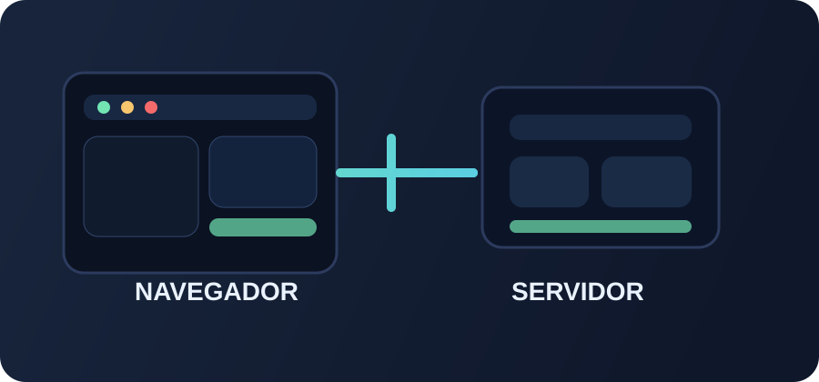

DESENV. WEB
HTML5, CSS, JavaScript e PHP
AULA 4 • INTRODUÇÃO AO JAVASCRIPT
• Desenvolvida por Brendan Eich em 1995.
• Inicialmente chamada Mocha, depois LiveScript e finalmente JavaScript.
• Criada em cerca de 10 dias para o navegador Netscape Navigator.
Brendan Eich é um tecnólogo americano, criador da linguagem JavaScript e cofundador do projeto Mozilla. Ele também foi CEO da Mozilla Corporation e, mais tarde, passou a liderar a Brave Software.
1997 — padronização pela ECMA International como ECMAScript.
2009 — ES5 e popularização do Node.js no lado do servidor.
2015 — ES6 / ES2015: let, const, classes, arrow functions, módulos e mais.
2016–2025 — evolução anual do JavaScript: ES7, ES8, ES9, ES10, ES11, ES12, ES13, ES14, ES15, ES16.
2026 — continuação da padronização com ES17 em evolução.
Navegador do usuário
Interface e interatividade
Servidor
Dados e lógica de negócio
Exemplos server-side citados no material: Node.js, PHP e Python.
O navegador interpreta a lógica do usuário e o servidor responde com dados e regras.

Especificação/padrão da linguagem.
Linguagem baseada no ECMAScript.
Motor JavaScript do Chrome e do Node.js.
Motor JavaScript do Firefox.
Motor JavaScript do Safari.
Ambiente que executa JavaScript fora do navegador.
Eles possuem motores JavaScript que implementam o ECMAScript.
"Olá"Number42 • 3.14
Booleantrue • falseUndefinedlet x;
Nulllet y = null;SymbolSymbol("id")
BigInt12345678901234567890nUse o editor abaixo para experimentar variáveis.
Arrays armazenam uma sequência de valores.
<head> <script src="app.js"></script> </head>
Separar o JavaScript em arquivo próprio facilita organização e manutenção.
<script>
alert("Olá, mundo!");
</script>
Solicite quatro notas, calcule a média e informe aprovado se média ≥ 7; caso contrário, reprovado. Mostre no console ou alert().
Extra: mostre também a maior e a menor nota.
Qual problema real você resolveria usando JavaScript no navegador?